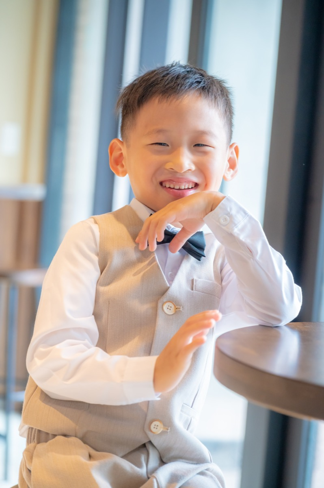
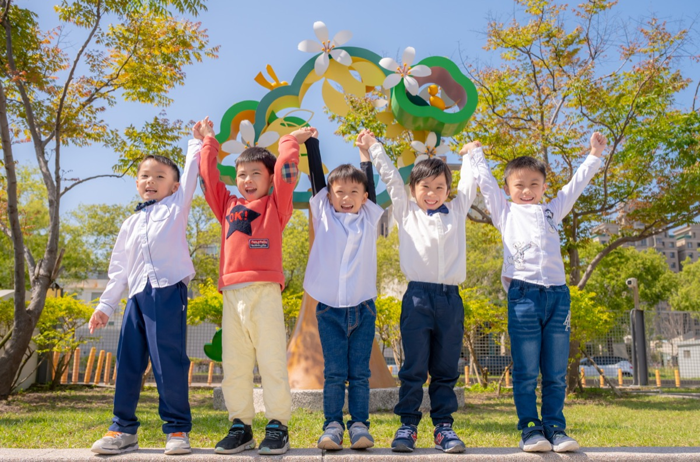
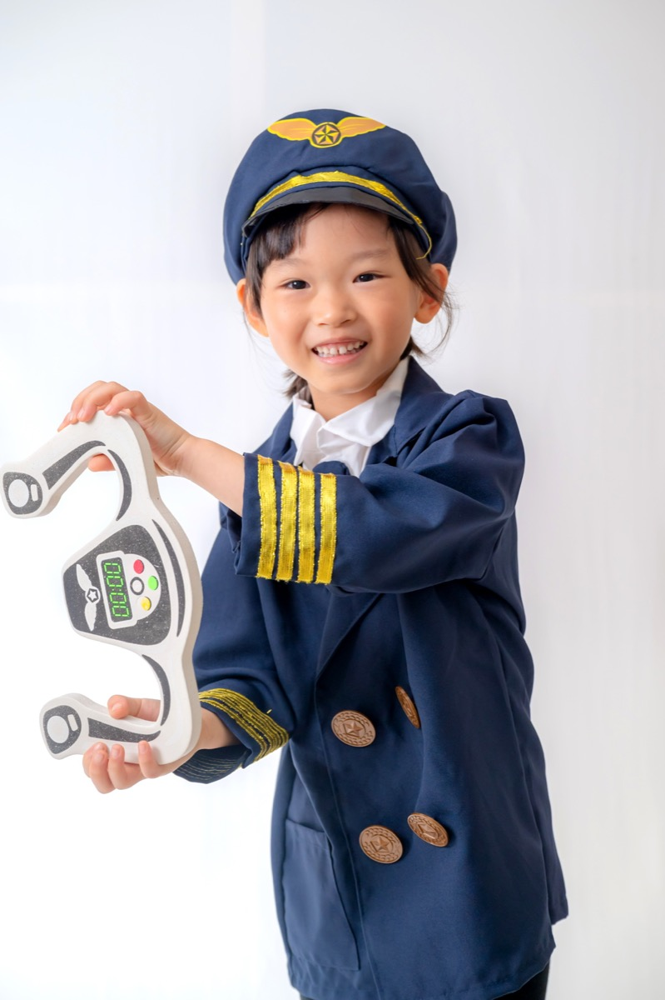

陽光幼兒園 2024 畢業照｜學士服與便服主題 2024/06/15 畢業照攝影 幼兒園 陽光幼兒園大班畢業照拍攝，含學士服個人照、班級團體照與戶外便服主題，自然互動引導讓每個孩子都留下最真實的笑容。  本次拍攝與陽光幼兒園合作，大班畢業生約 30 位。上午先完成學士服個人照與班級大合照，下午於園所戶外進行便服主題與小組互動照，搭配露營風道具，孩子們在自然引導下表現活潑，成品獲得園所與家長好評。   回作品總覽 回首頁